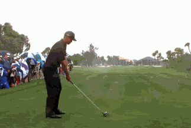
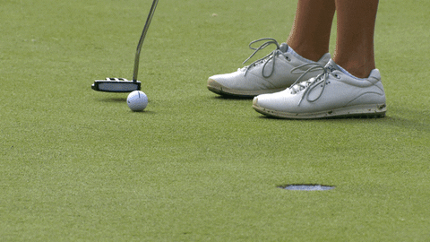
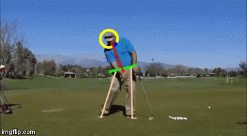
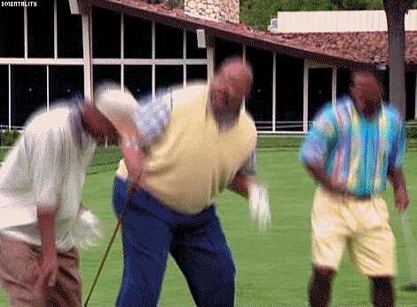

For all you avid golfers out there, sometimes your golf game can either be really great or you're about ready to destroy your clubs and never want to see a golf ball ever again. I'm here to tell you, it may not always go great but you can improve your game with a few helpful tips I learned as an average joe golfer.
Helpful Tips to Improve Your Golf Game
Tip 1: Keep Your Head Down
One of the most common mistakes golfers make is lifting their head too soon after making contact with the ball. This can lead to mishits and inconsistent shots. To avoid this, focus on keeping your head down and your eyes on the ball until after you've completed your follow-through.
Tip 2: Practice Your Short Game
While it's important to work on your long game, don't neglect your short game. Chipping and putting can make a big difference in your overall score. Spend time practicing these skills on the practice green and around the greens to improve your accuracy and confidence.
Tip 3: Use Proper Grip and Stance
A proper grip and stance are essential for a good golf swing. Make sure you're holding the club correctly and that your feet are shoulder-width apart. This will help you maintain balance and control throughout your swing.
Remember to Have Fun!
Golf is meant to be an enjoyable sport, so don't forget to have fun while you're out on the course. Whether you're playing with friends or just enjoying some time alone, focus on the positive aspects of the game and try not to get too frustrated with mistakes.
